Modello Cinetico-Molecolare Microscopico, Teorema dell'Impulso ed Equazione di Stato di Clapeyron
Lo studio macroscopico degli stati gassosi a bassa pressione è fondato sulle tre classiche leggi empiriche:
A temperatura costante, il volume di una massa di gas è inversamente proporzionale alla pressione:
$$p \cdot V = \text{costante} \iff p_1 V_1 = p_2 V_2$$
A pressione costante, il volume varia linearmente con la temperatura in Celsius:
$$V(t) = V_0 (1 + \alpha t), \qquad \text{con } \alpha \approx \frac{1}{273{,}15}\,{^\circ}\text{C}^{-1}$$
A volume costante, la pressione cresce linearmente con la temperatura:
$$p(t) = p_0 (1 + \alpha t)$$
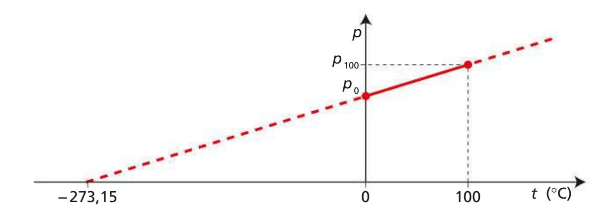
Ponendo $p(t) = 0$ oppure $V(t) = 0$, si ricava la temperatura limite naturale $t = -1/\alpha = -273{,}15\,{^\circ}\text{C}$, definita come Zero Assoluto ($0\,\text{K}$).
Risposta sintetica: Dal punto di vista fisico e termodinamico, no, non ha alcun senso.
La scala Celsius è una scala a intervalli (o affinemente traslata) e non una scala di rapporti. Il suo valore zero ($0\,^\circ\text{C}$) è un riferimento puramente convenzionale (il punto di fusione del ghiaccio a pressione atmosferica standard) e non corrisponde affatto all'assenza di moto o agitazione termica a livello microscopico.
La temperatura termodinamica rigorosa è legata direttamente all'energia cinetica traslazionale media delle particelle:
$$\mathbf{\langle E_k \rangle = \frac{3}{2} \, k_B \, T}$$
dove $k_B \approx 1{,}38 \times 10^{-23}\,\text{J/K}$ è la costante di Boltzmann e $T$ è la temperatura assoluta in Kelvin ($\text{K}$), il cui zero ($0\,\text{K} = -273{,}15\,^\circ\text{C}$) corrisponde al limite asintotico di minima agitazione termica possibile.
Spesso nei testi dei problemi sui gas perfetti (isobare, isocore o Clapeyron) si trovano frasi come: «la temperatura del gas raddoppia» oppure «calcola a quale temperatura il volume raddoppia».
⚠️ Regola aurea: dobbiamo stare attentissimi all'unità di misura! L'operazione di raddoppio ($T_2 = 2 T_1$) va applicata TASSATIVAMENTE alla temperatura assoluta in Kelvin ($T$), MAI ai gradi Celsius ($t$)!
L'operazione di moltiplicazione sui gradi Celsius ha pieno significato matematico e fisico unicamente quando applicata a una variazione o intervallo di temperatura ($\Delta T$), poiché la differenza tra due temperature è invariante rispetto alla traslazione dell'origine:
$$\Delta T = T_b - T_a = (t_b + 273{,}15) - (t_a + 273{,}15) = t_b - t_a = \Delta t$$
Di conseguenza: $\Delta t = 5\,^\circ\text{C} \implies 2 \times \Delta t = 10\,^\circ\text{C} \equiv 10\,\text{K}$.
In sintesi: ha senso moltiplicare un intervallo termico ($\Delta t$), ma non ha senso moltiplicare il valore puntuale di temperatura espresso in scala Celsius ($t$).
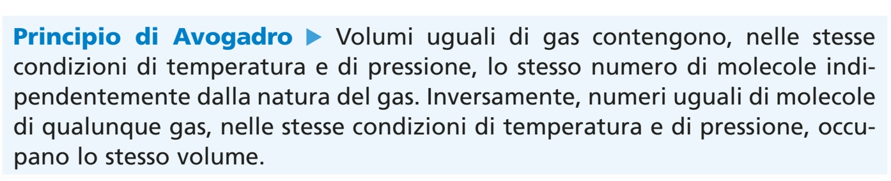
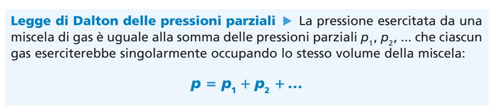
Combinando le leggi dei gas con il Principio di Avogadro per $n$ moli di sostanza:
$$\mathbf{p \cdot V = n \cdot R \cdot T = N \cdot k_B \cdot T}$$
dove $R \approx 8{,}314\,\text{J/(mol}\cdot\text{K)}$ e $k_B \approx 1{,}38 \cdot 10^{-23}\,\text{J/K}$.
Considerando un gas formato da $N$ molecole identiche di massa $m$ in moto caotico continuo entro un volume $V$, ciascuna collisione elastica contro una parete normale trasmette l'impulso $J_x = 2 m v_x$. Sommando su tutte le particelle e applicando l'isotropia tridimensionale ($\langle v_x^2 \rangle = \frac{1}{3}\langle v^2 \rangle$):
$$\mathbf{p = \frac{1}{3} \, \frac{N}{V} \, m \, \langle v^2 \rangle = \frac{2}{3} \, \frac{N}{V} \, \langle K_{\text{trasl}} \rangle}$$
Uguagliando la formula microscopica $pV = \frac{2}{3} N \langle K_{\text{trasl}} \rangle$ con l'equazione di Clapeyron $pV = N k_B T$, si ottiene la relazione fondamentale:
$$\mathbf{\langle K_{\text{trasl}} \rangle = \frac{1}{2} m \langle v^2 \rangle = \frac{3}{2} \, k_B \, T}$$
La temperatura assoluta $T$ misura direttamente l'energia cinetica media di traslazione delle singole molecole.
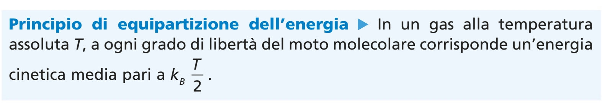
La termodinamica classica unifica i concetti di lavoro macroscopico e calore attraverso il Primo Principio della Termodinamica, superando la teoria del fluido calorico:
Joule dimostrò sperimentalmente che l'energia potenziale meccanica persa dalla discesa di pesi gravanti per un'altezza $h$ ($W = 2mgh$), dissipata per attrito viscoso dalle palette rotanti nell'acqua di un calorimetro adiabatico, produce un innalzamento termico rigorosamente proporzionale:
$$\mathbf{1\,\text{cal} \approx 4{,}186\,\text{J}} \qquad (1\,\text{kcal} = 4186\,\text{J})$$
$$\mathbf{Q = m \cdot c \cdot \Delta T = C \cdot \Delta T}$$
dove $c$ è il calore specifico in $\text{J/(kg}\cdot\text{K)}$ e $C = mc$ è la capacità termica in $\text{J/K}$.
In un sistema termicamente isolato, il calore ceduto dai corpi caldi bilancia esattamente quello assorbito dai corpi freddi ($Q_{\text{ced}} + Q_{\text{ass}} = 0$):
$$m_1 c_1 (T_{\text{eq}} - T_1) + m_2 c_2 (T_{\text{eq}} - T_2) = 0 \implies \mathbf{T_{\text{eq}} = \frac{m_1 c_1 T_1 + m_2 c_2 T_2}{m_1 c_1 + m_2 c_2}}$$
Per corpi della stessa sostanza ($c_1 = c_2$, ad esempio acqua a temperature diverse):
$$\mathbf{T_{\text{eq}} = \frac{m_1 T_1 + m_2 T_2}{m_1 + m_2}}$$
$$\mathbf{1\,\text{kWh} = 1000\,\text{W} \times 3600\,\text{s} = 3{,}60 \cdot 10^6\,\text{J} = 3{,}60\,\text{MJ}}$$
Permette di quantificare agevolmente il costo in bolletta: $\text{Costo} = E_{[\text{kWh}]} \times \text{Tariffa}_{[\text{EUR/kWh}]}$.
Usa gli slider sottostanti per variare la temperatura $T$ e il volume $V$ del gas. Osserva come il pistone si sposta realmente sul disegno, la velocità delle particelle molecolari si adatta all'agitazione termica, e il punto di stato $(V, p)$ viene tracciato dinamicamente sull'isoterma corrispondente.
Tutti e soli i problemi presenti ed effettivamente svolti negli appunti di lezione, svolti secondo il Protocollo Canonico a 9 Fasi. In ciascun esercizio, la Fase 4 include obbligatoriamente il disegno e lo schema vettoriale della situazione fisica:
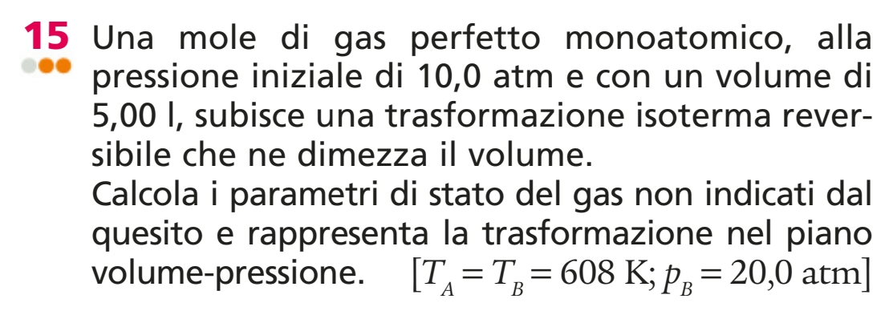
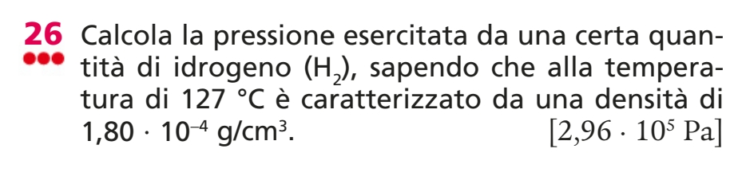
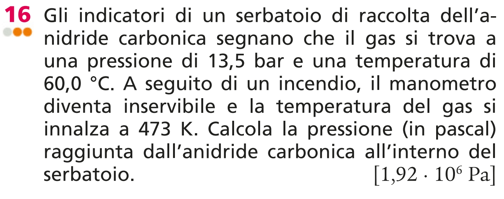
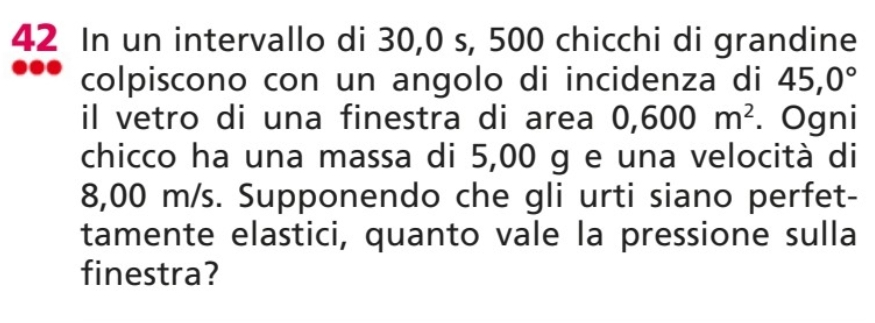
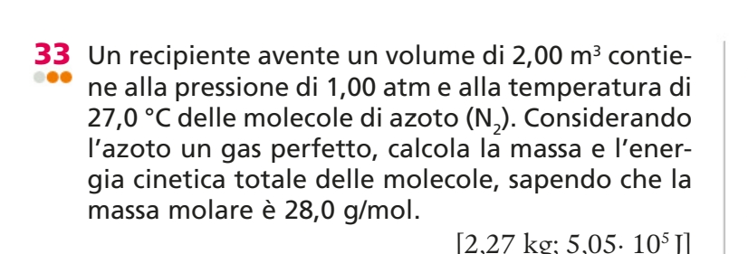
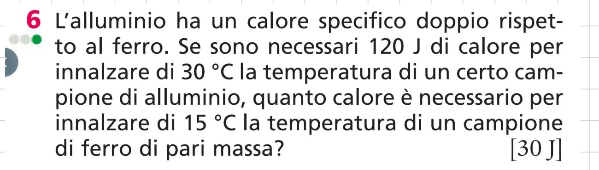
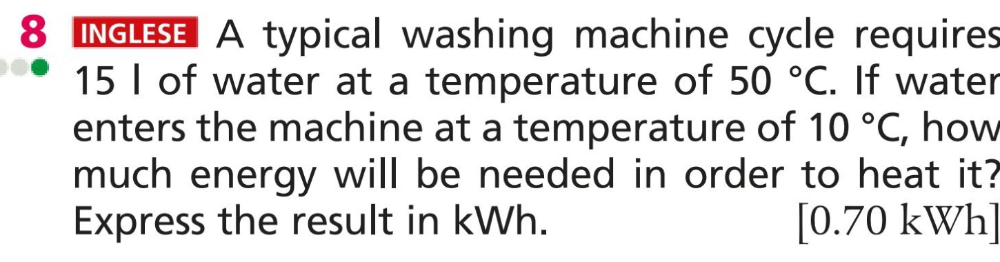
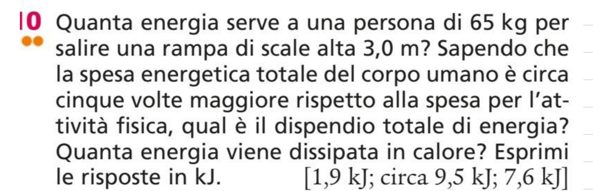